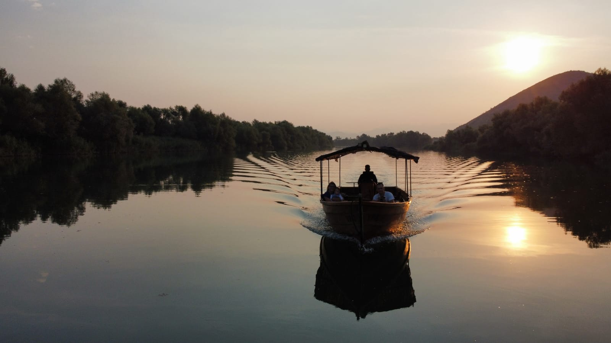

Discover Skadar Lake with Noah's Ark
Experience the untouched beauty of Montenegro's largest lake with our carefully designed boat tours.
Explore Montenegro's Alcatraz
Visit the historic Grmožur Island and discover its fascinating prison history and natural beauty.

Monastery Vranjina Experience
Navigate through narrow channels covered with water lilies to one of the most beautiful monasteries.

Discover Hidden Waterfalls
Hike to breathtaking waterfalls and explore the ruins of old water mills in Poseljani Village.